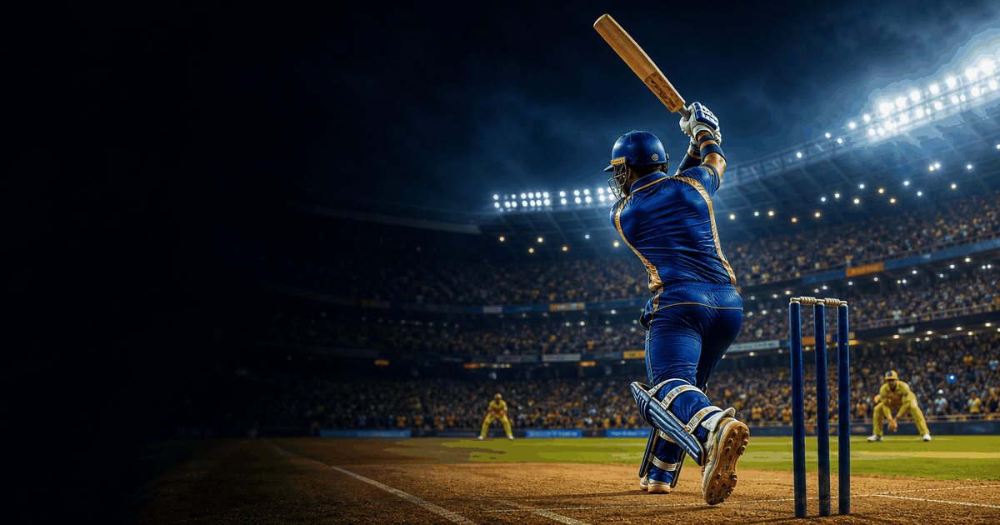

cricket event guide
Indian Premier League Final
A compact OneSliders guide to what the event is, how the current edition works and which parts matter most.
First season2008
FrequencyAnnual
Next edition2026
FormatT20 final
History viewEdition results and parts
Use the year switcher for recent editions. The selected edition stays inside this framed sport view.
 More cricketInterested in more cricket?
More cricketInterested in more cricket?Explore related events, places and calendar moments.